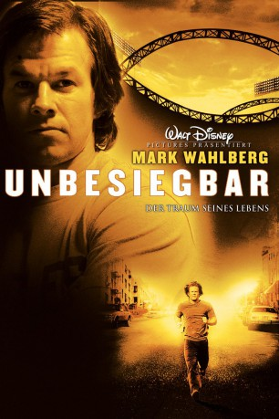
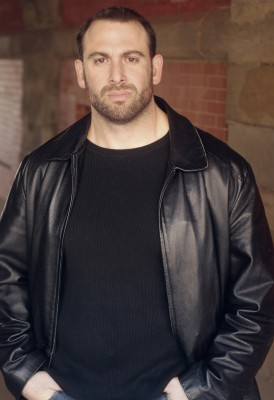

#2832 Unbesiegbar - Der Traum seines Lebens
 
 IMDB-Wertung: 7.1 / 10
IMDB-Wertung: 7.1 / 10  Metascore: 63
Metascore: 63 
Der Barkeeper Vince Papale ist bereits 30 Jahre alt, hat es beruflich nicht weit gebracht und wurde gerade von seiner Frau verlassen. Er träumt davon bei seinem Lieblingsfootballverein, den Philadelphia Eagles, mitzuspielen. Ein Casting eröffnet ihm die einmalige Chance...
Jahr: 2006
Dauer: 104 Minuten
FSK: 6
Land: USA Studio: Buena Vista PicturesTonspuren: DD5.1 - ,
Untertitel:
Auflösung: 1080p (1920x816) Größe: 8468 MB
Genre: Drama, Sport, Biographie
Regisseur: Ericson Core
Drehbuch: Brad Gann
Soundtrack: Mark Isham
Darsteller:
 Mark Wahlberg als Vince Papale
Mark Wahlberg als Vince Papale Greg Kinnear als Dick Vermeil
Greg Kinnear als Dick Vermeil Elizabeth Banks als Janet Cantrell
Elizabeth Banks als Janet Cantrell Kevin Conway als Frank Papale
Kevin Conway als Frank Papale Michael Rispoli als Max Cantrell
Michael Rispoli als Max Cantrell Kirk Acevedo als Tommy
Kirk Acevedo als Tommy- Dov Davidoff als Johnny
 Michael Kelly als Pete
Michael Kelly als Pete Nicoye Banks als TJ Banks
Nicoye Banks als TJ Banks- Turron Kofi Alleyne als Ronnie Sampson
-  Stink Fisher als Denny Franks
 Michael Nouri als Leonard Tose
Michael Nouri als Leonard Tose Jack Kehler als Wade Chambers
Jack Kehler als Wade Chambers Lola Glaudini als Sharon Papale
Lola Glaudini als Sharon Papale- Paige Turco als Carol Vermeil
 Morgan Turner als Susan Vermeil
Morgan Turner als Susan Vermeil Lynn Cohen als Mrs. Spegnetti
Lynn Cohen als Mrs. Spegnetti James Murtaugh als Principal
James Murtaugh als Principal Randy Couture als 'Toruci' Player #1
Randy Couture als 'Toruci' Player #1- Jeffrey Lee Gibson als 'Tanker' Opposing Player #1
 Patrick M. Walsh als 'Tanker' Opposing Player #2
Patrick M. Walsh als 'Tanker' Opposing Player #2- Franklin Ojeda Smith als Les
 Patrick McDade als The Turk
Patrick McDade als The Turk Frederick Strother als Eagles Coach #1
Frederick Strother als Eagles Coach #1 Tony Luke Jr. als Cape-Clad Fan
Tony Luke Jr. als Cape-Clad Fan Jimmy Palumbo als Philly Fan #1
Jimmy Palumbo als Philly Fan #1- Pete DeStefano als Philly Fan #3
 Pride Grinn als Philly Fan #4
Pride Grinn als Philly Fan #4 Daniel Spink als Philly Fan #5
Daniel Spink als Philly Fan #5- John Leslie Wolfe als TV Anchor
- Michael Brainard als Eagles Coach #4
 Charles Pendelton als Frank's Friend #1
Charles Pendelton als Frank's Friend #1- Mike Quick als Voice of the Eagles #2
- Steven Moreti als Vince Papale's Neighbor
- Daniel Bartkewicz als Philadelphia Eagles Fan , uncredited
- Mark Bartosic als Gilette , uncredited
- Scott Allen Bell als Eagles Fan , uncredited
 Robert Bizik als Eagles Fan , uncredited
Robert Bizik als Eagles Fan , uncredited- Rod Britton als Wade Key , uncredited
- Sharon Carpenter-Rose als Laughing Eagles Fan , uncredited
- Lionel Anthony Cook als Tryout Hopeful , uncredited
- Catherine Copplestone als Eagles Fan , uncredited
- Shaun Paul Costello als James McAlister , uncredited
- Gerardo Davila als Dallas Press / Photographer , uncredited
 Mark Falvo als Eagles' Fan , uncredited
Mark Falvo als Eagles' Fan , uncredited Matt Fowler als Crazed Eagles Fan , uncredited
Matt Fowler als Crazed Eagles Fan , uncredited- Nicole Holt als Dallas Fan , uncredited
- Cory Kastle als Eagles hopeful , uncredited
 William James Kelly als Eagles Fan , uncredited
William James Kelly als Eagles Fan , uncredited Basil Kershner als Bar Patron , uncredited
Basil Kershner als Bar Patron , uncredited
Datei: X:\2006(N-Z)\Unbesiegbar - Der Traum seines Lebens (2006, FSK6, 1920x816).mkv seit 21.12.2015
Festplatte: HD 2005(G-Z)-2006(A-Z)
 Es gibt insgesamt 62 Filme in der Gruppe '2006(N-Z)'
Es gibt insgesamt 62 Filme in der Gruppe '2006(N-Z)'